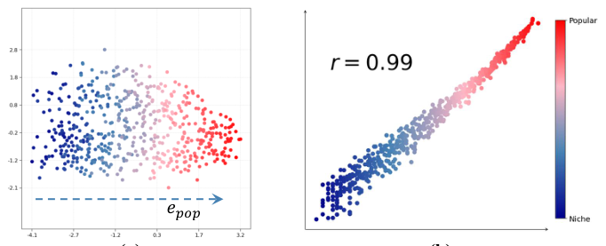

Rethinking Popularity Bias in Collaborative Filtering via Analytical Vector Decomposition (从解析向量分解重新审视协同过滤中的流行度偏差)
- 会议/期刊: KDD 2026 (First Cycle Accepted)
- 作者与机构: Lingfeng Liu, Yixin Song, Dazhong Shen, Bing Yin, Hao Li, Yanyong Zhang, Chao Wang (USTC / NUAA / iFLYTEK)
- 推荐链路定位: 精排（BPR 类 CF 模型的嵌入几何后校正）
- 研究方向: 去偏公平与工业架构 / 协同过滤
- 论文原文: https://arxiv.org/abs/2512.10688v6
- 开源代码: https://github.com/LingFeng-Liu-AI/DDC
TL;DR (1分钟核心速览)
本文指出流行度偏差并非外部混淆因子，而是 BPR 成对排序优化在嵌入空间留下的内在几何伪影：物品嵌入沿一条主导“流行度方向” \(e_{pop}\)排列，投影幅度与交互频次近乎线性相关（Pearson\(r=0.99\)）。据此提出 DDC——冻结预训练嵌入，仅学习每用户两个标量\(\alpha_u,\beta_u\)，让正样本更新只沿个性化偏好方向\(e_{pref}\)、负样本更新只沿\(e_{pop}\) 反向校准。在 Amazon-Book/Yelp/Tmall 三数据集、5 个 BPR 骨干上，MRR@10 相对提升 6.0%–29.3%，同时 AvgPop@10 下降 21.4%–47.2%，训练 BPR 损失降至基线的 1.5%–1.8%。
Background & Motivation (背景与核心矛盾)
- 主流范式: 隐式反馈 CF（MF、LightGCN、DGCF、NCL、LightCCF）几乎统一用 BPR 损失训练，最终打分均为内积 \(\hat y_{ui}=e_u^\top e_i\)。
- 前人局限: IPS 重加权、DICE/MACR 因果解耦、正则惩罚等宏观方法把流行度偏差当作外部混淆因子处理，只治症状；且 IPS/MACR 在本文实验中甚至低于原始 BPR（如 MF-IPS 在 Yelp 上 MRR@10 仅 0.0283 vs. BPR 0.0588），说明重加权假设本身不稳。
- 核心洞察 (Key Insight): 作者发现 BPR 的梯度期望 \(\mathbb{E}[\Delta e_i]\propto Pop(i)\cdot\mathbb{E}_{u\in\mathcal{U}_i^+}[e_u]\)——热门物品被大量多样用户拉动，其平均用户嵌入依大数定律收敛到全局均值用户方向，于是流行度被直接编码为隐空间主轴；冷门物品则被小众用户拉向各自特异方向。图 1 的二维投影与\(r=0.99\) 线性拟合定量证实了这一点。
- 本文切入点: 既然偏差源于 BPR 让同一个 \(e_u\)同时承担“表达偏好”与“校准流行度”两个冲突任务，就放松\(e_u^{pos}=e_u^{neg}\) 的约束，做方向解耦。

Method (核心方法设计)
1. 整体框架 (Overall Architecture)
DDC 是一个与模型无关的轻量微调阶段：先正常训练任意 BPR 骨干至收敛并冻结其用户/物品嵌入 \(e_{u,orig},e_i^*\)；再离线构造两个方向——全局流行度方向\(e_{pop}\)（高/低流行度物品质心之差）与每用户个性化偏好方向\(e_{pref}^u\)（其历史中预训练打分 top-\(k\)物品嵌入的均值）；随后仅优化每用户两个标量\((\alpha_u,\beta_u)\)，把正/负项分别投影到偏好/流行度轴上重算 BPR；推理时用\(e_u^{final}=e_{u,orig}+\alpha_u^*e_{pop}+\beta_u^*e_{pref}^u\) 与冻结物品嵌入做内积排序，不增加任何维度。
flowchart TD
A["预训练 BPR 骨干 (MF/LightGCN/DGCF/NCL/LightCCF) 收敛并冻结嵌入"] --> B["构造 e_pop: 高/低流行度物品质心差"]
A --> C["构造 e_pref^u: 用户历史 top-k 打分物品均值"]
B --> D["非对称 BPR 微调: 仅学 α_u, β_u"]
C --> D
D --> E["e_u^final = e_u,orig + α_u* e_pop + β_u* e_pref^u"]
E --> F["内积全库排序 Top-N"]2. 关键设计拆解 (Key Designs)
-
流行度方向与偏好方向的解析构造：痛点是没有显式“偏差向量”可扣。作者用 \(\rho=5\%\)头尾物品质心差定义\(e_{pop}=\frac{v_{diff}}{\|v_{diff}\|}\)，\(v_{diff}=\frac{1}{|\mathcal{I}_{head}|}\sum_{i\in head}e_i-\frac{1}{|\mathcal{I}_{tail}|}\sum_{i\in tail}e_i\)；偏好方向取用户历史中预训练打分 top-\(k\) 比例物品的嵌入均值并归一化。直觉：前者是 BPR 梯度期望的稳定吸引子，后者用真实交互行为而非模型推荐来锚定偏好，避免被偏差二次污染。
-
非对称方向校正（核心创新）：痛点在于标准 BPR 梯度 \(\nabla_{e_u}\mathcal{L}=-w_{uij}(e_i-e_j)\) 中正项被热门物品“污染”、负项被全局流行度主导，二者混在同一更新里。DDC 改写为 $\(\mathcal{L}_{DDC}=\sum_{(u,i,j)}-\ln\sigma\big((e_{u,orig}+\beta_u e_{pref}^u)^\top e_i^*-(e_{u,orig}+\alpha_u e_{pop})^\top e_j^*\big)\)$ 即正项只许沿 \(e_{pref}\)动、负项只许沿\(e_{pop}\)动。直觉：\(\beta_u\)的梯度只依赖正样本对齐，\(\alpha_u\) 的梯度只依赖负样本校准，两个子问题彻底解耦，优化景观从“折中妥协”变为“各司其职”，故能跳出 BPR 的次优局部极小。
-
训练目标、负采样与推理效率：损失即上式（含 L2 正则），负采样沿用骨干原有策略（每正样本 1 个均匀负样本），无需难负采样；可学习参数仅 \(2|\mathcal{U}|\)个标量，微调收敛极快（Yelp 上 LightGCN 损失从 1.5055 降至 0.0267）。推理时\(e_u^{final}\) 可离线预计算，在线开销与原始内积检索完全一致，无额外延迟。
Experimental Setup & Evaluation Protocol (实验设置与评估协议)
- 数据集与预处理: 均采用
10-core过滤：
| 数据集 | #Users | #Items | #Interactions | 稀疏度 | 场景说明 |
|---|---|---|---|---|---|
| Amazon-Book | 139,090 | 113,176 | 3,344,074 | 99.979% | 图书电商，长尾显著 |
| Yelp | 135,868 | 68,825 | 3,857,030 | 99.959% | 本地生活 POI 评论 |
| Tmall | 125,554 | 58,059 | 2,064,290 | 99.972% | 电商行为 |
- 数据划分与防穿越 (Splitting Strategy): 采用 RecBole 默认的
比例划分（训练/验证/测试），以验证集 MRR@10 早停（50 轮不升即停），取验证最优模型测测试集。 - 排名评测协议 (Ranking Protocol): 采用无偏
Full-Ranking（全库未交互物品排序），指标 Recall@10 / NDCG@10 / MRR@10 / MAP@10，另加 AvgPop@10 度量推荐物品平均流行度。 - 对比基线与超参设置: 骨干 5 个（MF、LightGCN、DGCF、NCL、LightCCF）；去偏基线 7 个（IPS、DICE、MACR、PC、PAAC、DCCL、TPAB），统一在 RecBole 框架、batch=8192、\(d=64\)下网格搜索调参；DDC 主实验统一取\(k=30\%\)，未做逐数据集调参。
Key Experimental Results (实验关键数据)
1. 主实验对比 (Main Results)
与 SOTA 去偏方法对比（节选 MRR@10 / NDCG@10，加粗为最优）：
| Method | Amazon MRR | Amazon NDCG | Yelp MRR | Yelp NDCG | Tmall MRR | Tmall NDCG |
|---|---|---|---|---|---|---|
| MF (BPR) | 0.0557 | 0.0444 | 0.0588 | 0.0410 | 0.0599 | 0.0490 |
| MF-IPS | 0.0358 | 0.0294 | 0.0283 | 0.0194 | 0.0413 | 0.0300 |
| MF-DICE | 0.0492 | 0.0386 | 0.0510 | 0.0345 | 0.0586 | 0.0481 |
| MF-MACR | 0.0505 | 0.0405 | 0.0451 | 0.0313 | 0.0563 | 0.0457 |
| MF-TPAB | 0.0565 | 0.0450 | 0.0580 | 0.0406 | 0.0602 | 0.0490 |
| MF-DDC | 0.0660 | 0.0520 | 0.0760 | 0.0502 | 0.0677 | 0.0552 |
| Improv. | +16.8% | +15.6% | +29.3% | +22.4% | +12.5% | +12.7% |
| LightGCN | 0.0709 | 0.0563 | 0.0766 | 0.0534 | 0.0670 | 0.0558 |
| LightGCN-PAAC | 0.0794 | 0.0630 | 0.0781 | 0.0534 | 0.0707 | 0.0592 |
| LightGCN-TPAB | 0.0777 | 0.0615 | 0.0782 | 0.0544 | 0.0674 | 0.0560 |
| LightGCN-DDC | 0.0814 | 0.0640 | 0.0860 | 0.0578 | 0.0737 | 0.0605 |
| Improv. | +2.5% | +1.6% | +10.0% | +6.3% | +4.2% | +2.2% |
跨骨干泛化（MRR@10 相对提升）：MF +13.0%~+29.3%、LightGCN +10.0%~+14.8%、DGCF +13.2%~+18.6%、NCL +8.3%~+13.3%、LightCCF +6.0%~+11.4%。
2. 消融实验 (Ablation Study)
Tmall + MF 骨干，非对称更新规则与最终嵌入组合（pos-term_neg-term，a=\(\alpha_u e_{pop}\)，b=\(\beta_u e_{pref}\)）：
| 变体 | MRR@10 | NDCG@10 | MAP@10 |
|---|---|---|---|
| MF (BPR Baseline) | 0.0599 | 0.0490 | 0.0323 |
| DDC (a_a) 对称流行度 | 0.0590 | 0.0482 | 0.0317 |
| DDC (b_b) 对称偏好 | 0.0645 | 0.0528 | 0.0349 |
| DDC (ab_ab) 双校正混合 | 0.0644 | 0.0527 | 0.0349 |
| DDC (a_b) 反向错配 | 0.0417 | 0.0323 | 0.0225 |
| DDC (b_a) 本文 | 0.0677 | 0.0552 | 0.0366 |
| w/o \(\alpha_u^*e_{pop}\) | 0.0672 | 0.0548 | 0.0363 |
| w/o \(\beta_u^*e_{pref}\) | 0.0591 | 0.0486 | 0.0318 |
| DDC (full, Eq.14) | 0.0677 | 0.0552 | 0.0366 |
3. 关键实验发现 (Key Findings)
- 非对称是刚需，不是锦上添花：
b_a比次优的ab_a（0.0674）与对称b_b（0.0645）都高，而错配a_b直接崩到 0.0417（低于 BPR 基线 30%），证明“正项沿偏好、负项沿流行度”这一分工不可交换——把流行度校正加到正项会压制真实偏好信号。 - 精度与去偏同向而非权衡：Tmall 上 LightCCF-DDC 在 MRR@10 提升 6.0% 的同时 AvgPop@10 从 1565.37 降至 826.54（-47.2%），LightGCN-DDC 降 39.1%；说明 DDC 不是用新颖性换相关性，而是把模型从流行度驱动的局部极小中解放出来。
- 收敛速度揭示几何根源：Yelp 上 LightGCN 基线 929 轮收敛于损失 1.5055，DDC 微调后降至 0.0267（约 1.8%）；Amazon 上 MF 从 1.2922 降至 0.0191（1.5%）。损失骤降对应 MRR@10 快速超越基线峰值，直接佐证 BPR 原解确为几何偏差造成的次优驻点。
Highlights & Limitations (亮点、对比与审稿批判)
- 与代表作对比 (vs. Prior Work): 与 IPS/DICE/MACR 等宏观重加权或因果解耦方法相比，DDC 不假设外部混淆结构、不引入复杂训练管线，而是直接在嵌入几何层面动刀；与 SGL/SimGCL 等对比学习“追求均匀性”的间接去偏相比，DDC 是定向校正单一流行度主轴，参数仅 \(2|\mathcal{U}|\) 个标量，且可插拔于任意已收敛 BPR 模型。
- 可迁移亮点: (1) “冻结骨干 + 每用户少量标量沿预定义方向微调”是一种极低成本的后处理范式，可迁移到时序去偏、位置去偏等其它已知偏差轴；(2) 用头尾质心差构造偏差方向的做法简单可复用，无需因果图或倾向分估计。
- 审稿级局限批判: (1) \(e_{pref}^u\)依赖预训练模型打分选 top-\(k\)，若骨干偏差极重则偏好方向本身被污染，\(k\)的敏感性（MF 最优 0.5、LightGCN 最优 0.3）说明该超参需逐场景调，削弱“免调参”卖点；(2) 实验仅在三个中等规模公开集、\(d=64\) 下验证，缺少工业级千万物品全库检索的延迟/内存实测与线上 A/B，且未讨论多方向偏差（如位置偏差与流行度耦合）共存时的可分解性。
Rating (四维评分)
- 方法创新性 (Novelty): ⭐⭐⭐⭐ （核心机制与方法设计具备明确创新性，理论与实验动机支撑充分）
- 评估协议与实验扎实度 (Protocol & Experiments): ⭐⭐⭐⭐ （主流公开数据集评测完整，包含多基线对比与消融实验验证）
- 写作与数学规范度 (Clarity & Rigor): ⭐⭐⭐⭐⭐ （问题形式化定义清晰，核心模块数学推导与架构阐述严谨易读）
- 工业落地与复现价值 (Industrial & Practical Value): ⭐⭐⭐⭐ （兼顾推荐效果增益与训练/推理效率，具备实际场景迁移参考价值）